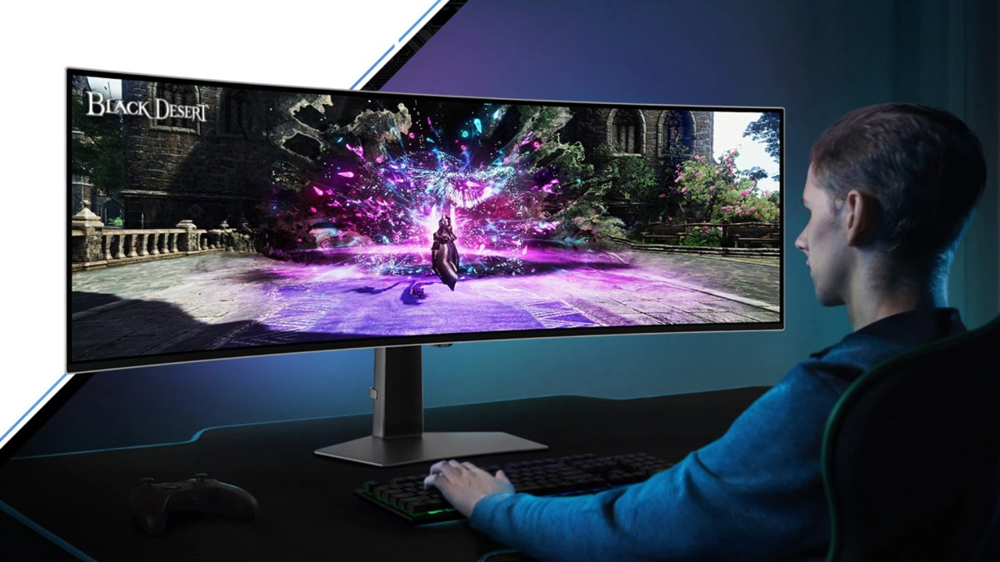

Jamais vu à ce prix, cet immense écran OLED de Samsung remplace deux moniteurs 27 pouces

🛒 En lien avec cet article
🛒 Voir le prix : Samsung galaxy
Publicité — Liens de partenariat Amazon : une commission peut être reversée, sans surcoût pour vous.
🔥 Top produits tech du moment
Publicité — Liens de partenariat Amazon : une commission peut être reversée, sans surcoût pour vous.
Les géants de la tech concentrent une part croissante de l'innovation mondiale. Leurs annonces ont un impact direct sur les utilisateurs, les développeurs et l'ensemble du secteur.
Ce qu'il faut retenir
[Deal du jour] Le Samsung Odyssey OLED G9 condense l’équivalent de deux écrans QHD dans une immense dalle OLED de 49 pouces.
Ce dernier, habituellement coûteux, est désormais proposé à 669,99 € chez Carrefour, son prix le plus bas à ce jour.
Pourquoi c'est important
Cette information conforte la position des grands groupes de la tech dans l'économie mondiale. Elle concerne directement les utilisateurs de technologies numériques et mérite d'être suivie de près dans les prochaines semaines. Jamais vu à ce prix, cet immense écran OLED de Samsung remplace deux moniteurs 27 pouces est ainsi un signal à prendre en compte pour comprendre les évolutions du secteur.
En résumé
Retenez l'essentiel : Jamais vu à ce prix, cet immense écran OLED de Samsung remplace deux moniteurs 27 pouces. Cette actualité a été rapportée par Numerama. Nous continuerons de suivre ce sujet et de vous tenir informés des prochaines évolutions.
Source : Numerama